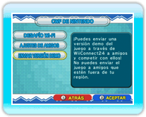
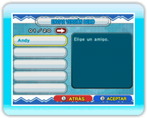
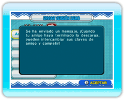
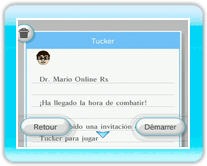

19 |
Cómo enviar la versión demo (Dr. Mario) |
 |
|
Puedes enviar la versión demo del juego a aquellos amigos que todavía no hayan comprado Dr. Mario Online Rx. Antes de enviarla, asegúrate de que el servicio WiiConnect24 esté correctamente configurado (pág. 18). Nota: La versión demo solo se puede utilizar para disputar enfrentamientos amistosos a través de la
Conexión Para poder enviar la versión demo, necesitarás tu propia clave de amigo. Puedes consultar tu clave de amigo seleccionando CWF DE NINTENDO en la pantalla de selección del modo. Una vez dentro de este menú, selecciona AJUSTES DE AMIGOS y finalmente, CONFIRMAR CLAVE DE AMIGO. ● Enviar la versión demo

En la pantalla de selección del modo, selecciona CWF DE NINTENDO para acceder al menú de la CWF de Nintendo y, a continuación, selecciona ENVIAR VERSIÓN DEMO.

Cuando aparezca tu agenda, selecciona el amigo Wii al que deseas enviar la versión demo y oprime SÍ para confirmar.

Una vez que se haya enviado la versión demo, aparecerá un mensaje de confirmación. Nota: No puedes enviar la versión demo a aquellos amigos Wii cuyas consolas Wii no estén configuradas en el mismo país que tu consola Wii, ni a aquellos que no dispongan de una clave Wii. 
● Recibir la versión demo Nota: Solo aquella persona que posea la versión completa de Dr. Mario Online Rx podrá invitar a la otra. Los ajustes y los resultados obtenidos no quedarán guardados. |
 |
 |